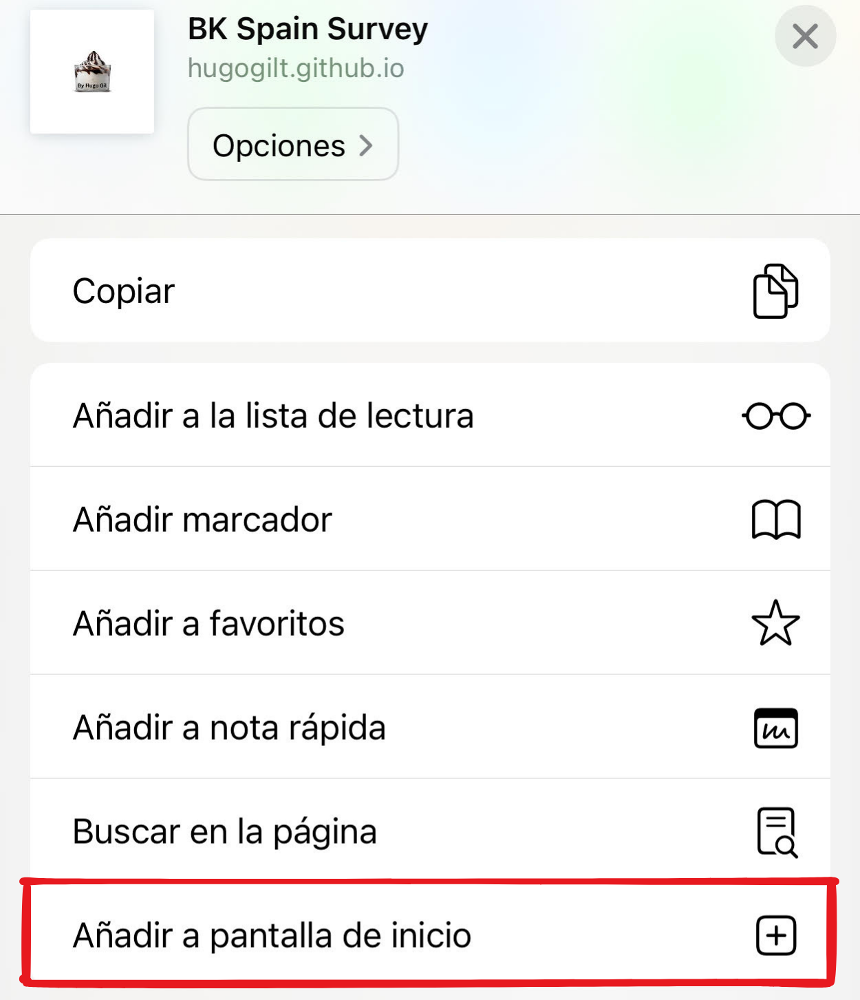

1: Haz click en el botón "compartir" de la barra de direcciones:
2: Busca la opción: Añadir a pantalla de inicio" y haz click.
Asígnale un nombre y haz click en "Añadir"
3: Busca el icono que acabas de crear junto al resto de tus aplicaciones y ábrelo:
4: ¡Disfruta de tu helado gratis!